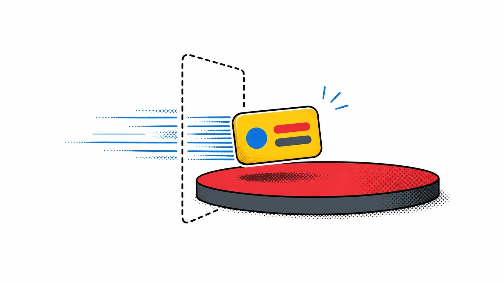

Chapter 08 · Motion
Transitions & Animation
A transition: plays when an element enters or
leaves the DOM because of a state change. It's declarative — one attribute, reversible mid-flight — and it's
just CSS/JS under the hood, so it costs nothing when nothing is transitioning.
<script>
import { fade } from 'svelte/transition';
let visible = $state(false);
</script>
<button onclick={() => visible = !visible}>toggle</button>
{#if visible}
<div transition:fade>fades in and out</div>
{/if}Svelte ships fade, fly,
slide, scale, draw (for SVG paths), and
crossfade from svelte/transition. Pass parameters like a
function call: transition:fade={{ duration: 2000 }}. Try the three below —
the shape of the motion, not just its speed, is what each one communicates.
in: and out: — independent, non-reversing
{#if visible}
<div in:fly={{ y: 200 }} out:fade>flies in, fades out</div>
{/if}transition: is bidirectional — interrupt it and it reverses
smoothly from wherever it is. in:/out: are independent
instead: give the element a different entrance and exit, and if an exit gets interrupted, it restarts from
scratch rather than reversing.
animate: — reacting to reorders
animate:flip triggers only when a
keyed {#each} reorders — not on add/remove, just on shuffle. It's
built on a technique you can implement yourself in about ten lines:
| Step | What happens |
|---|---|
| First | Record every item's current position. |
| Last | Let the DOM reorder; record the new positions. |
| Invert | Offset each item back to where it was, with a transform. |
| Play | Animate that transform to zero — it glides to its new spot. |
{#each list as item, i (item.id)}
<li animate:flip>{item.name}</li>
{/each}
A dynamic, playful editorial zine illustration: a small rounded card mid-flight, motion speed-lines trailing behind it in blue, flying through a dashed doorway/threshold outline (representing a DOM boundary) onto a stage floor. Flat vector style, hand-inked outlines, halftone dot shading for depth, strict palette of yellow, blue, red and charcoal gray only on white, generous whitespace, no text baked in. Target ~1280x720px, 16:9 landscape; compose for a small on-page figure with the subject centred and safe margins — it is letterboxed into a 16:9 box, so keep nothing important near the edges.
Generate with your image agent, then drop the file here.
Prefer css over tick in custom transitions
A custom transition function returns { delay, duration, easing, css, tick }.
Use css when you can — those animations can run off the main thread. Reach for
tick (which runs on every frame in JS) only when you truly need to touch something
CSS can't, like text content.
Try it
Swap transition:fade for in:fly={{ y: -30 }} out:fade
on a real toggle in your app. Interrupt the exit mid-fade by re-triggering it — notice it restarts instead of
reversing, unlike a plain transition:.
Motion is information. A fly that arrives
from the direction the user just came from reads as "back." The same fade with no direction reads as neutral.
Pick the transition that tells the truth about where things came from.